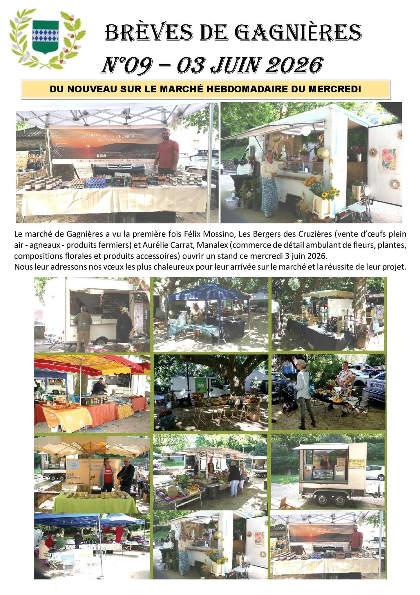

Du nouveau sur le marché hebdomadaire du mercredi
Félix Mossino (Les Bergers des Cruzières — œufs plein air, agneaux, produits fermiers) et Aurélie Carrat (Manalex — fleurs, plantes, compositions florales et accessoires) rejoignent le marché du mercredi. Tous nos vœux de réussite à eux !